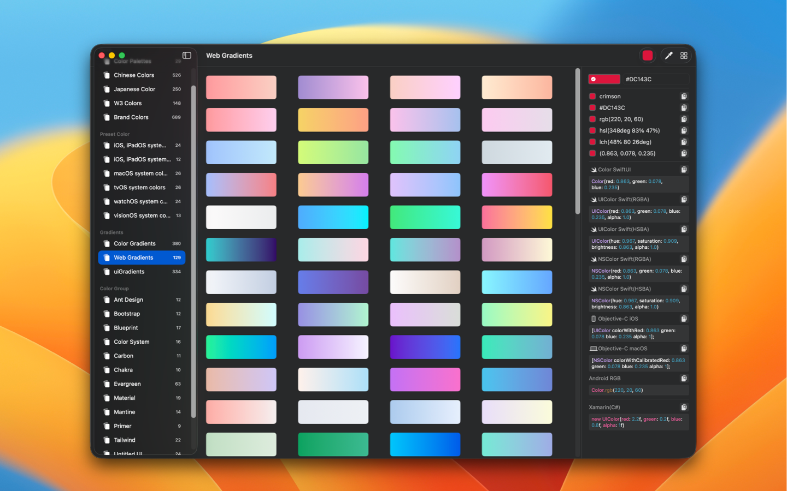
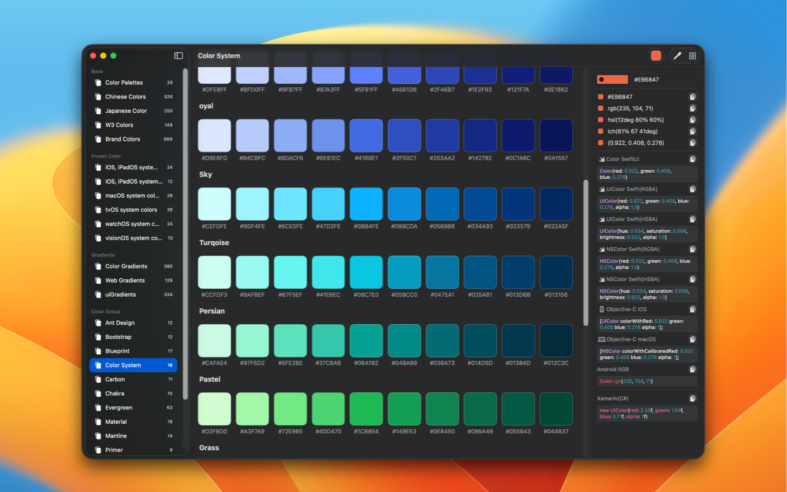
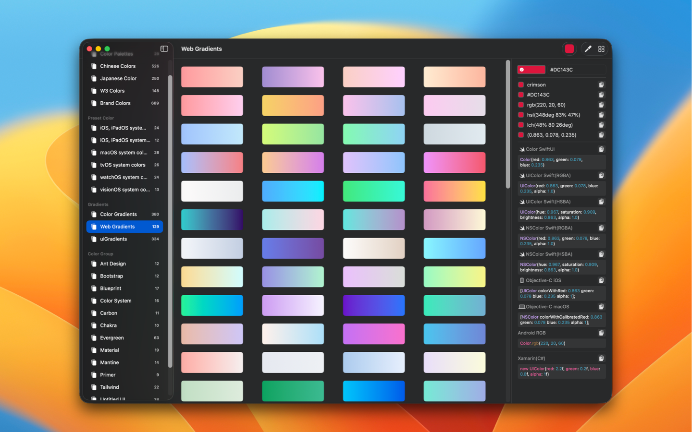
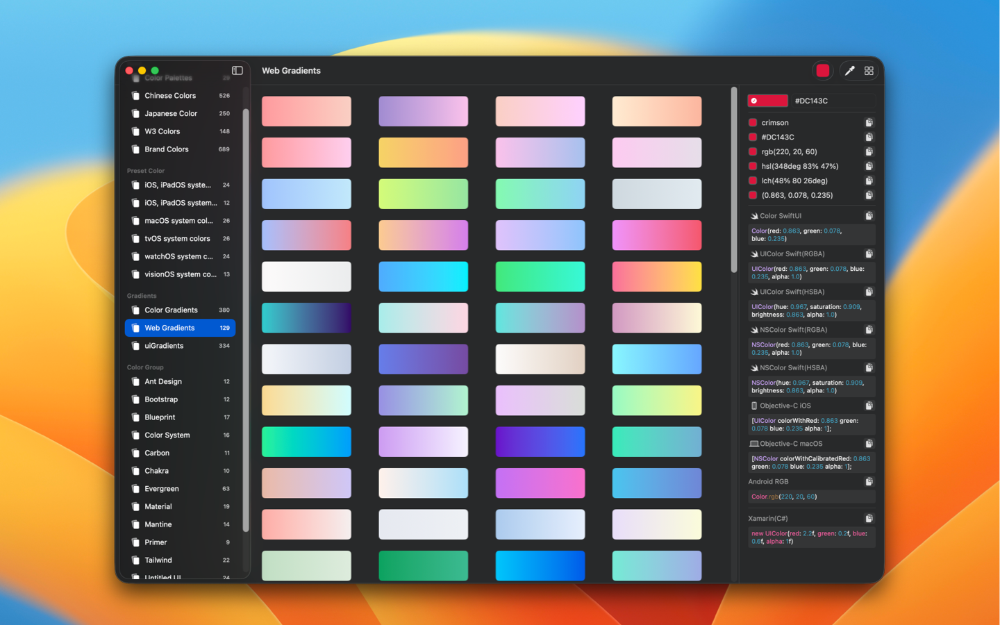
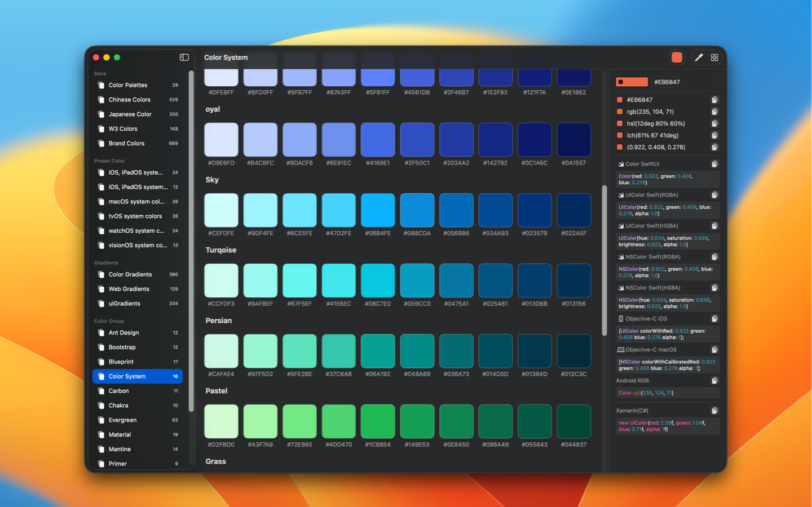
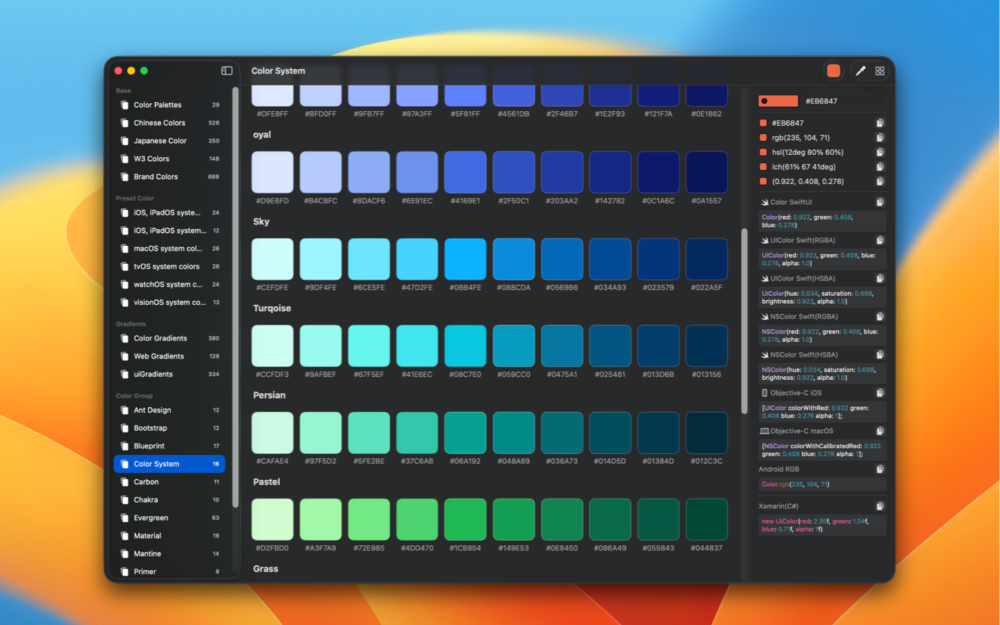

English • 应用商店 • 联系&支持 • 更新日志
PaletteGenius 是一款旨在提高设计师和开发者效率的屏幕颜色选择工具。
 
为什么需要开发这个应用程序呢？
✦ 我一直在使用系统内置的颜色选择器。它既紧凑又快速，但它也有明显的缺点。它无法显示十六进制值，并且不容易复制并转换为其他颜色格式。
✦ 收集流行的颜色，包括来自流行组件库和标准颜色值的颜色。
✦ 丰富的颜色代码格式：涵盖主流平台和编程语言（iOS、Android、Swift、Objc、CSS 等），并提供快速代码复制的键盘快捷键。
✦ 外观：支持浅色和深色模式。
 


 
